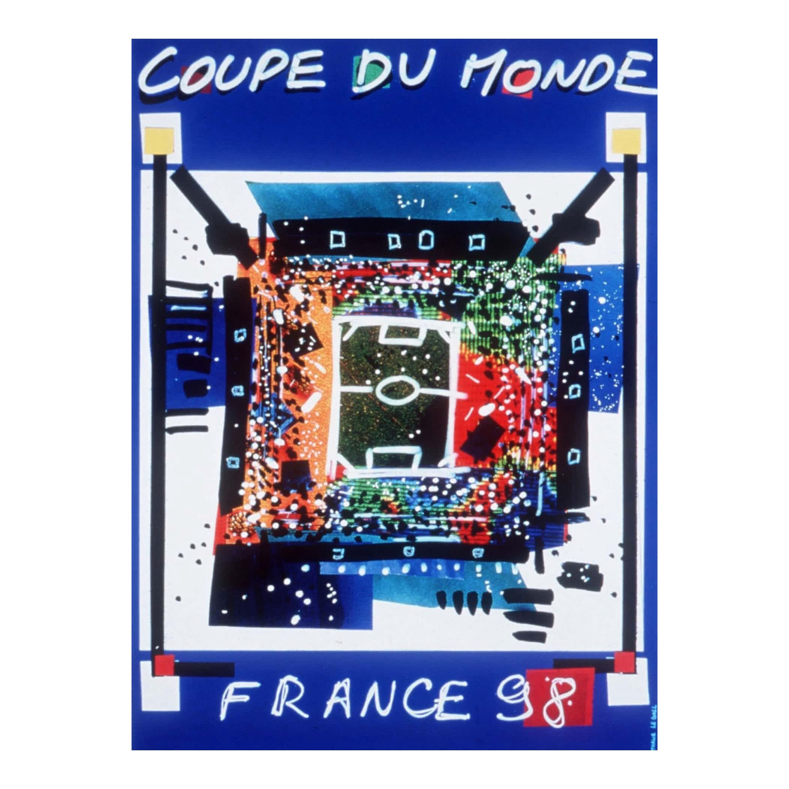
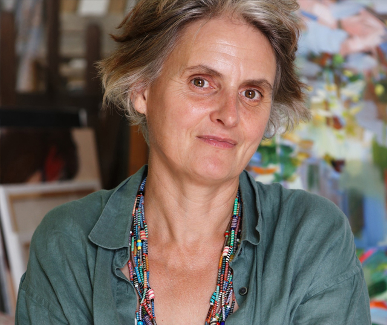

Official Poster
The official poster for the 1998 FIFA World Cup in France was designed by Nathalie le Gall, who was an art student at the Ecole Supérieure des Beaux-Arts de Montpellier at the time. Her design was selected through a competition organized by the France 1998 organizing committee.
The artwork features a vibrant, mixed-media design of a football pitch using dabs of bright colors—primarily blue, yellow, and red—to represent the festivities and playful identity of the tournament.

Nathalie le Gall
Nathalie le Gall (born 1970) is a French visual artist and illustrator best known for winning the design competition for the official 1998 FIFA World Cup poster while she was still a student.
Born in Paris, she was 27 years old and studying at the Ecole Supérieure des Beaux-Arts de Montpellier when her design was selected from 40 competing entries. Her winning artwork, which features a football pitch depicted in vibrant, textured dabs of blue, yellow, and red, helped launch her career on the international stage.
Following her success with the 1998 World Cup, le Gall established herself as an independent painter and illustrator.
In 2013, she opened this large workshop and creative space in the centre of Montpellier. It serves as her personal studio and a school where she teaches drawing, painting, and life drawing to the public.
Her work is highly diverse, utilizing techniques such as oil, acrylic, pastel, collage, and ceramics. She is noted for her study of "universal colour" and light, often rebuilding her paintings through deep layers of oil.
Beyond smaller canvas works, she collaborates with architects on the graphic design of monumental sculptures in the Occitanie region of France.
She has created illustrations for international companies and scientific organizations, including brochures for the CIRAD (a French agricultural research centre) for global summits.